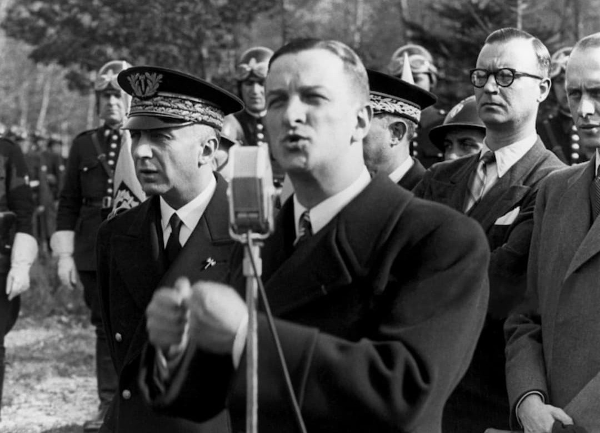

René Bousquet prenant la parole au micro, entouré de militaires et de civils, lors d’une cérémonie officielle sous Vichy.
Nom : René Bousquet
Dates : 11 mai 1909 – 8 février 1993
Origine : Montauban (Tarn-et-Garonne)
Fonction : Secrétaire général de la police du régime de Vichy
Haut fonctionnaire brillant et ambitieux, René Bousquet devient l’un des principaux responsables de l’appareil policier du régime de Vichy. Nommé secrétaire général de la police, il dispose d’un pouvoir considérable sur les forces de l’ordre françaises.
Son rôle ne se limite pas à l’administration : il participe activement à la mise en œuvre de la politique antisémite et répressive du régime.
René Bousquet joue un rôle central dans l’organisation des grandes rafles de Juifs en France, notamment la rafle du Vél’ d’Hiv en juillet 1942. Il négocie directement avec les autorités allemandes et met la police française au service des déportations.
Sous sa responsabilité, des milliers de personnes sont arrêtées, internées puis déportées vers les camps d’extermination.
Bousquet incarne une forme de collaboration technocratique : il n’est pas un chef militaire, mais un administrateur qui met son efficacité au service de la politique du Reich et de Vichy.
Sa capacité à organiser, coordonner et faire exécuter les ordres fait de lui un acteur majeur de la répression en France.
Après la Libération, René Bousquet est jugé mais bénéficie d’une amnistie. Il retrouve une vie publique et des liens avec plusieurs responsables politiques de la IVe et de la Ve République.
Son passé refait surface dans les années 1980–1990, au moment où la mémoire de la Shoah et de la collaboration est davantage interrogée. Il est assassiné en 1993 par un militant d’extrême droite.
Aujourd’hui, René Bousquet est considéré comme l’un des principaux responsables administratifs des rafles et des déportations de Juifs en France. Son nom reste associé à la collaboration policière et à l’usage de l’appareil d’État pour servir la politique antisémite du Reich.